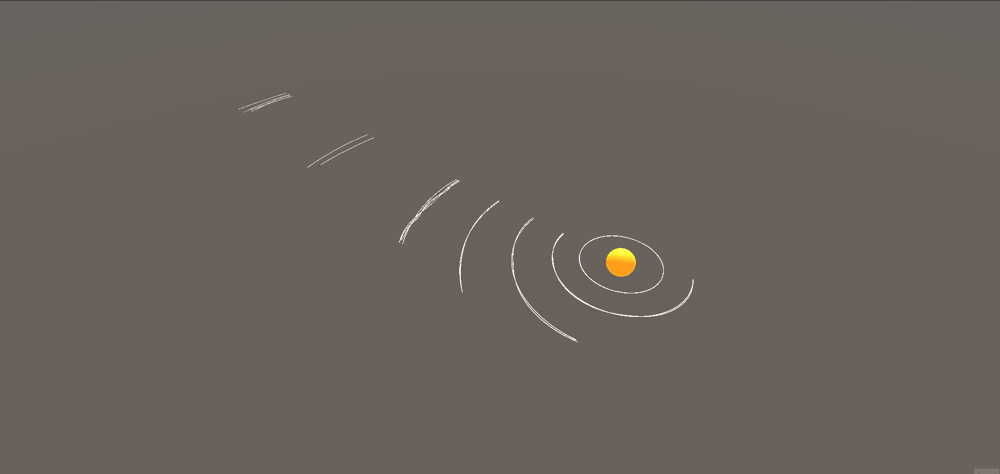

Project Details
BladeGunners is a first-person, online arena shooter game. It utilises skating movement mechanics to allow for rail grinding on certain objects in the arena which will charge up the player's energy-based weapon. Set in the distant future where bullets are a thing of the past, private weapons manufacturers seek to covertly field test their weapons through gameshow sponsorships. Players are placed into 2 teams of 4 and must face each other in a deathmatch for the highly desired grand prize.
Gravity Simulation
For the simulation of the gravity I opted to use a rigidbody and Newton's law of gravitation to calculate the acceleration of the celestial bodies; as well as another formula to calculate the starting velocity of the celestial bodies so that they have enough speed to start an orbit around the star in the system.
Planet Generation
In order to store the data about the planets I used scriptable objects which would be used to store any infomation that needed to be calculated. The generation of the planets were then done by using constrained randomness based on the values calculated about each planet and values in our sysetm. For instance the hill sphere is used to constrain how close/far the bodies moons can be.

What Went well
An area that went well in my opinion was the handling of the celestial bodies data as I used inheritance to create multiple types of scriptable
objects for all the different bodies which allowed me to choose which data was needed by all the bodies and which was only needed by one type of body.
Another area I'm happy with is the gravity simulation as it allows for any number of planets to be generated and all have gravity simulated around them and be
affected by the other bodies that are in the scene which allows for the orbits to be disturbed.
What Could be improved
An area I would like to improve is the spawning of the planets so that they aren't all spawned in a row and instead are at random points around the star
Another area I would want to improve on is some of the mesh generation as the planets are spawned with some terrain generated on to them; however, it was done
close to the end so it was left to simply add some hills to the planets but I would have liked it to add crators on the moons.
My final improvement would most likely be to change how the planets were spawned so that it wasn't constrained randomness as I feel that the solar system
usually looks very similar to past generations.